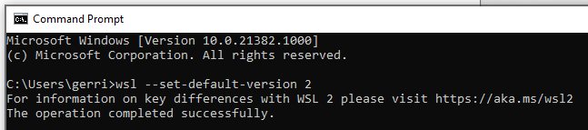
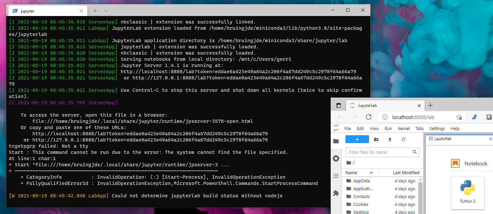
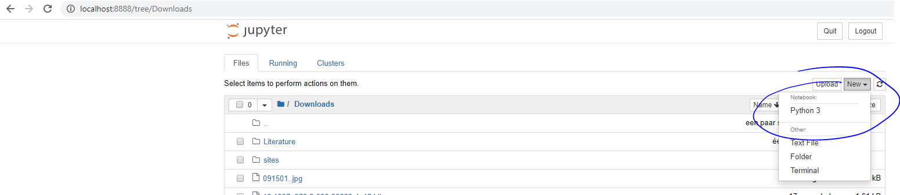

Step 1: Make sure Windows is up-to-date.
Go to Windows Update and make sure all updates are installed. At the bottom of the Windows Update page, you can check your OS build and System Info. Make sure that you are on Build 18362 or higher.
Step 2: Enable Windows Features
Go to Control Panel (e.g. by typing control panel in start menu) -> Programs -> Turn Windows features on or off -> Enable "Windows Subsystem for Linux" and "Virtual Machine Platform".
Step 3: Restart your machine
Step 4: Download Linux kernel update package
Download this file and execute it. Approve elevated permissions.
Step 5: Enable WSL 2
Altough this step is not mandatory, it is wise to work on the latest version of WSL 2. Open Command Prompt and type "wsl --set-default-version 2" and enter.
Step 6: Download Ubuntu
Open Microsoft Store, search for Ubuntu and install it. Otherwise, open this link and install it.
Step 7: Create default UNIX user account
Launch the just installed app (Search in start menu for Ubuntu). It will now load Ubuntu; this can take a while. When this is done, you will be asked to create a username and password. There is no need for very sophisticated password, but please remember it! Note: When typing your password, you will not see any character appearing. This is normal and everything works alright. End with an enter.
Step 8: Install Miniconda
Now Ubuntu is installed, it is time to update some packages and install Python! Start by downloading Miniconda and install this. You can do this by the following commands, which can be launched in the terminal you obtained from the previous step. You can re-open this terminal anytime by launching the Ubuntu app. When a program is asking for permission, type 'y' or 'yes' and enter. When asking for installation location, just type enter.
sudo apt upgrade
wget https://repo.anaconda.com/miniconda/Miniconda3-latest-Linux-x86_64.sh
bash Miniconda3-latest-Linux-x86_64.sh
conda init
Step 9: Install some packages
You are likely to use some frequently used packages. With the following command, you will install some frequently used ones.
conda install -y jupyterlab pandas scikit-learn numpy seaborn nodejsStep 10: Run jupyterlab
You should now be able to run jupyter lab or notebook! Just type `jupyter lab` or `jupyter notebook`. A URL will display in the terminal, which you can copy paste into a browser. Usually it is something like http://localhost:8888/lab?token=***
Step 11: Create a new jupyter notebook
Navigate to the folder where you want to create the notebook. Create the new notebook. A new file with the extension .ipynb should be added. Open this notebook by clicking on it.
Step 12: Try
You can now run Python in the Jupyter Notebook! Play around a little. Try some additions (3+3) and check the result by executing the cell (can be done with shift enter). If at this stage you get a Kernel Error, close Jupyter Notebook (both the browser and terminal) and reopen it with administrator rights.
Step 13: Do your research!
Now you are suited with all tools necessary to do your research. As an example, you can download here some simple machine learning on sales data from the DSPM course. Save the .ipynb file to a file path to your choice. You can then start Jupyter Notebook and open the notebook file.